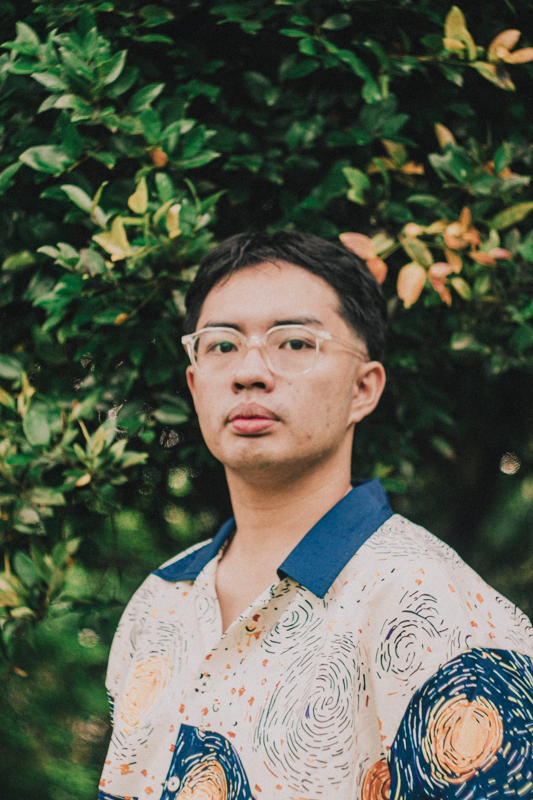
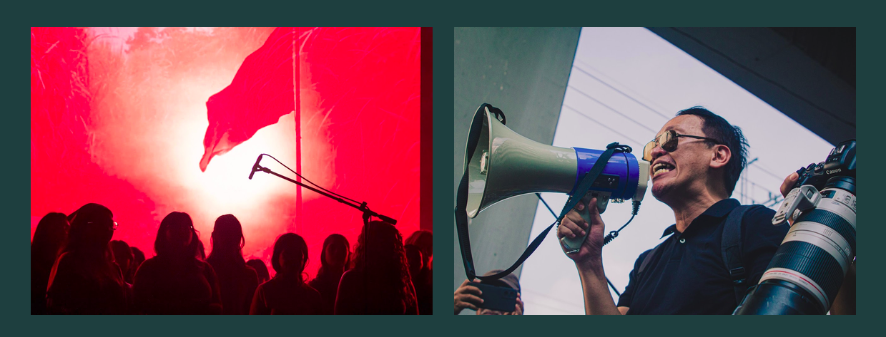
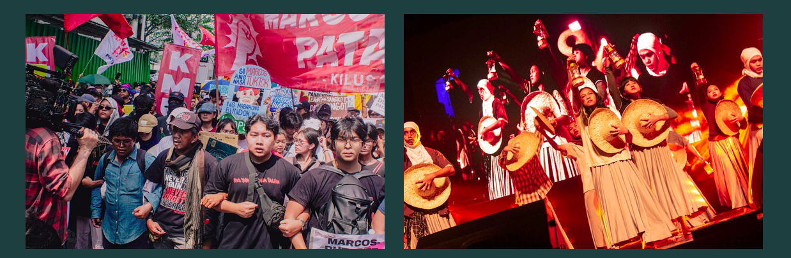
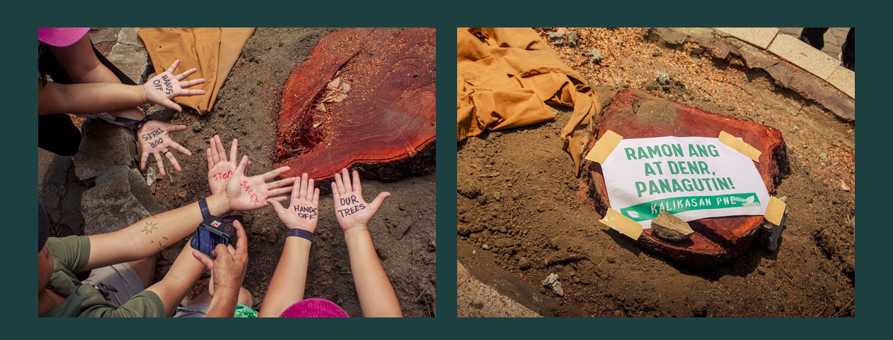
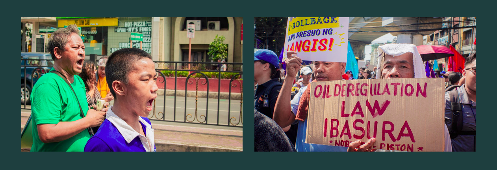

“To live fully in the name of freedom”

An active person, with a lot of fascinations and wonders to learn and explore the world behind how everything works, while enjoying the meaning of life. Aside from the advocacies and that busy work schedule that I have, I still enjoy to at least have some personal time to myself as a way to recover and breath as a regainment of energy, especially in my own mental and physical health, especially when listening to my favorite Japanese music and trying different forms of art as a way to relieve my stressing problems.
Here are some of my sample output works on my portfolio website:




For more sample of my works, please refer to my portfolio site: https://sites.google.com/view/kjmacabalitao-journportfolio
2025 - Present
I'm a volunteer correspondent in an Alternative Media, where it focuses in the issues of the working class, where my role is to make a report coverage through Photography, Videography for News Reel, and even some News Writeup as a form of story telling in bringing light on the struggle of workers for decent living and rights.
2026
My role here is for Photojournalism, which I cover from campus-related issues, multisectoral, and even some events across from other UP campuses. Which I've managed to cover different stories and angle using my camera, that combines alongside with an correspondent role in Mayday Multimedia.